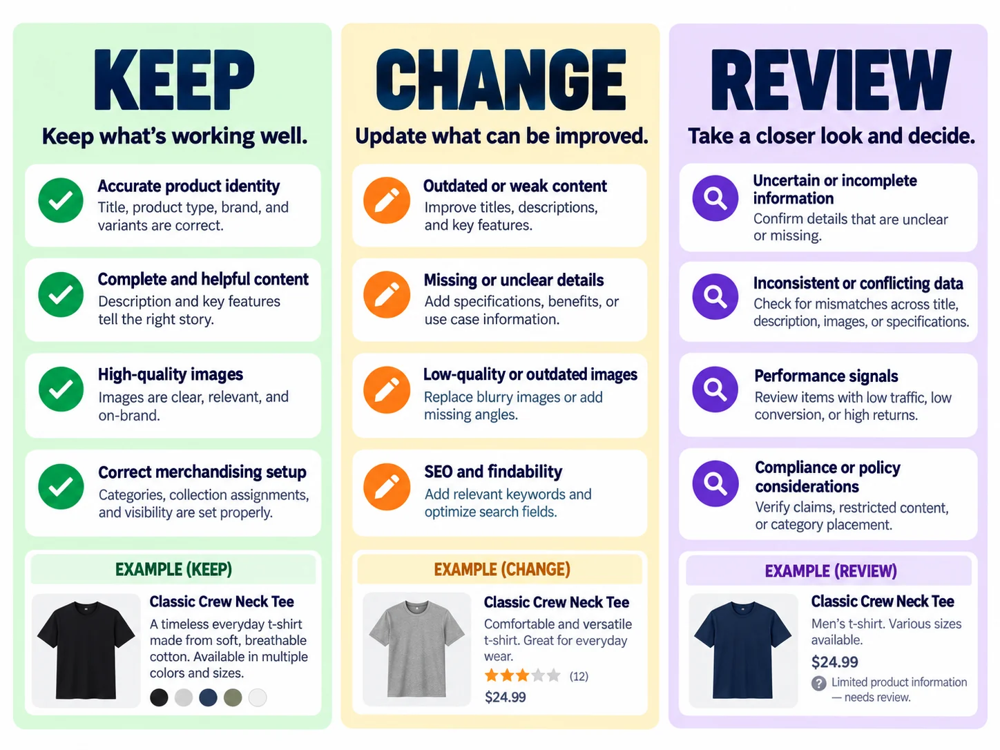
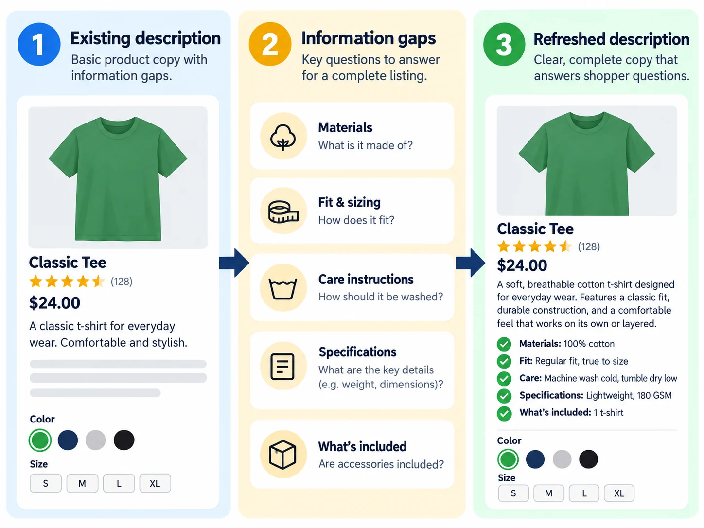
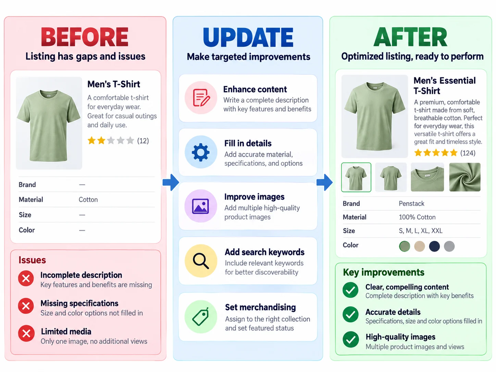

Updating an existing product is a different job from creating a new one.
An established listing already has history: a title shoppers may recognize, a URL that may already be indexed, product details that may still be accurate, images that may still be useful, and collection placement that may already be working.
The goal is not to rewrite everything. It is to identify the weak parts, improve those, and leave the useful parts alone.
1. Start with the reason you are refreshing it.
Do not begin by rewriting the description. Start by identifying the actual problem.
- Information is outdated.
- The product changed.
- The listing is incomplete.
- The title is hard to understand.
- Brand voice has evolved.
- Customers keep asking the same question.
- Product imagery changed.
- The product belongs in newer collections.
Different problems should produce different fixes.
2. Audit before you edit.
Before changing anything, inspect the listing as it exists. Look across identity, content, structured details, images, search, and merchandising.
3. Put every field into Keep, Change, or Review.
This framework helps separate obvious fixes from changes that deserve more caution.

| KEEP | CHANGE | REVIEW |
|---|---|---|
| Accurate and useful | Clearly wrong | Could improve |
| Current | Missing important information | Has tradeoffs |
| Easy to understand | Outdated | May affect existing links or structure |
| Still appropriate for the product | Confusing to shoppers | Needs judgment before editing |
4. Protect the product’s identity.
A refresh should not make the product feel like a completely different item unless the product itself changed.
Be especially careful with product titles, variant names, handles or URLs, product type, and core attributes. If the title already identifies the product clearly, you do not need to rewrite it just because the description needs work.
For a deeper title check, see Product Titles 101: What Should Actually Go in One?.
5. Refresh the description by filling information gaps.
Do not measure improvement by word count. Measure it by questions answered.

6. Structured fields are often better than another paragraph.
Not every product detail belongs in prose. Structured product fields and metafields can keep information useful without turning the description into a storage locker.
| Information | Better home |
|---|---|
| Material | Product field or metafield |
| Care instructions | Care field |
| Dimensions | Structured field |
| Features | Feature field |
| Product story | Description |
| Fit explanation | Description or sizing field |
7. Review imagery separately from copy.
A product can have strong copy and weak images, or great images with poor metadata. Audit those independently.
- Does the image still represent the product accurately?
- Are important product views present?
- Are file names useful?
- Does alt text describe the image?
- Are there outdated or duplicate images?
For a deeper image audit, see Product Image Metadata: Filenames vs. Alt Text vs. Visible Copy.
8. Be careful with URLs.
Changing page copy is low risk. Changing page identity deserves more caution.
If an established product URL is accurate and already linked or indexed, do not change it just to squeeze in newer wording. A URL change can require redirects and can affect existing links.
9. Recheck collection placement.
A product can gain new merchandising opportunities even when the product itself has not changed.
An insulated bottle may still belong in Water Bottles, but it may also now belong in Hiking Essentials or Gifts for Travelers.
For more on that decision, see How Collections Can Become Search Landing Pages.
10. Refresh SEO by improving clarity, not stuffing keywords.
If shopper language has changed or better terminology has emerged, review the title, description, collection relationships, image context, and internal links.
The better question is: does this page explain the product in the language customers actually use?
For more on intent, see Long-Tail Keywords: The SEO Strategy Small Stores Can Actually Use.
11. Know when to stop.
A refresh is finished when the listing is accurate, complete enough, easy to understand, properly organized, visually current, and aligned with its intended shopper.

Where penstack fits in
Refreshing an existing product should not mean starting from a blank prompt.
penstack can use the context already available in the product workflow, including collection brief, product description, product metafields, product details, Brand Voice, and Shopify context.
That lets you preserve what is already useful, improve what is weak, and review the changes before publishing.
The takeaway
A good product refresh preserves what works and improves what does not. The goal is not a completely different listing. It is a better version of the same product page.
Give shoppers the details the old listing leaves out.
Keep what is already useful and improve the gaps. Explore a workflow for refreshing existing Shopify product content with review before publishing.